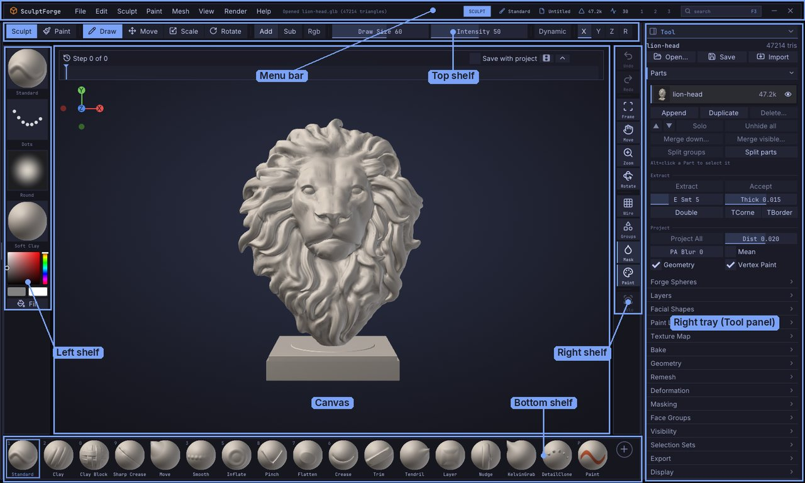

SculptForge User Guide
This guide explains every part of SculptForge, the free, open-source sculpting app for VFX, animation and games: how the interface is organised, how to sculpt, mask, paint (on vertices or textures) and manage Parts, how to generate models with AI, and how to get your work into a game engine, a film pipeline, Blender or ZBrush. It is updated with every release; What's new lists what changed.
Read it inside SculptForge (Help > User Guide, or Shift+F1) or on the SculptForge website.
Start here#
| You want to | Read |
|---|---|
| Install it | Install SculptForge: downloads for Windows, macOS and Linux |
| Set it up on Windows | The Windows notes: SmartScreen, pen tablets (Windows Ink, Mouse mode), screen scaling |
| Make your first sculpt | Your first sculpt in 10 minutes: a mushroom house from the default sphere |
| Start from a head or body | Starter meshes: base meshes with clean quads, File > New from Starter Mesh |
| Find your way around | The interface: the menus File, Edit, Sculpt, Paint, Mesh, View, Render, Help, the shelves and the Tool panel; Navigating the view |
| Learn the brushes | Sculpting and brushes |
| Switch from ZBrush | Coming from ZBrush (the ZBrush-style layout and keys) and the Glossary |
| Switch from Blender | Blender keys, and Working with Blender for the bridge add-on |
| Fix a problem | Troubleshooting |


Getting started#
- Welcome to SculptForge
- Your first sculpt in 10 minutes
- What's new
- Coming from ZBrush
- Install SculptForge on Windows, macOS and Linux
- The interface
- Navigating the view
Sculpting#
- Sculpting and brushes
- Brush Lab and sharing brushes
- Masking
- Face Groups and visibility
- Selection sets and morph targets
- Parts
- Forge Spheres
- Vertex Paint and materials
- Texture painting
- UV Editor
- Material painting (PBR)
- Sculpt layers and blend shapes
- Facial shapes and live face
- Subdivision levels
- Micro levels: hundreds of millions of polygons
- Dynamic topology
- Sculpt Timeline and timelapse
- Moving, rotating and posing (Gizmo)
- Subdivide, remesh, decimate and LODs
AI and capture#
- Image and text to 3D
- Gaussian splats
- Scan an object into a splat
- From scan to sculptable mesh
- Phone capture and AR
Files and pipelines#
- Baking normal and displacement maps
- Exporting, Unreal and ZBrush
- Export presets
- Working with Blender
- Working with Maya
- Projects, autosave and Snapshots
- Scripting and automation
- Packs and macros
- SculptForge for studios
Reference#
- Keyboard and mouse
- Performance and big meshes
- Troubleshooting: tablets, display, crashes and FAQ
- Glossary
Getting help#
- Hold Ctrl and point at any button for what it does, its shortcut and its script command.
- Press F1 for every shortcut and mouse gesture, and F3 to find any command by name.
- Ask questions and report problems on the issue tracker (Help > Report a problem).
SculptForge is free software under the GNU General Public License v3.0 or later. This guide is part of SculptForge and is covered by the same licence.